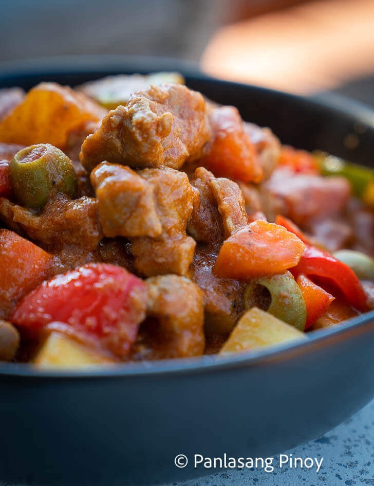

Home
Pork Caldereta

Pork Caldereta is a Filipino tomato based stew. It is composed of cubed pork , potato, carrots, tomato sauce,and liver spread. There are also regions in the Philippines that makes use of peanut butter.
Ingredients
- Pork
- Knorr Pork cube
- Tomato sauce
- Green olives
- Potatoes
- Carrots
- Liver spread
- Onion
- Garlic
Steps
- Heat the oil in cooking pot then saute garlic and onion
- Add pork then saute.
- Pour in tomato sauce and water to boil and cooked in low heat under 60 minutes.
- Add liver spread then stir.
- Put potato and carrot and cook. Then olives and bell peppers.
- Season with salt and ground black pepper.
- Serve and enjoy!